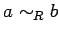
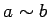
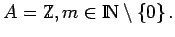

Inhalt Index DeskTop Bronstein

 Algebra und Diskrete Mathematik Mengenlehre Äquivalenz- und Ordnungsrelationen
Algebra und Diskrete Mathematik Mengenlehre Äquivalenz- und Ordnungsrelationen


Eine binäre Relation R in einer Menge A heißt Äquivalenzrelation, wenn R reflexiv, symmetrisch und transitiv ist. Für aRb verwendet man in diesem Falle auch die Bezeichnung  oder , wenn die Äquivalenzrelation R aus dem Zusammenhang bekannt ist, und sagt, a ist äquivalent zu b (bzgl. R).
| Beispiel A |
|
 Es gilt genau dann, wenn a und b bei Division durch m den gleichen Rest lassen (Kongruenzrechnung modulo m). |
| Beispiel B |
|
Gleichheitsbeziehung in unterschiedlichen Bereichen, z.B. in der Menge |
| Beispiel C |
|
Ähnlichkeit oder Kongruenz geometrischer Figuren. |
| Beispiel D |
|
Logische Äquivalenz aussagenlogischer Ausdrücke. |